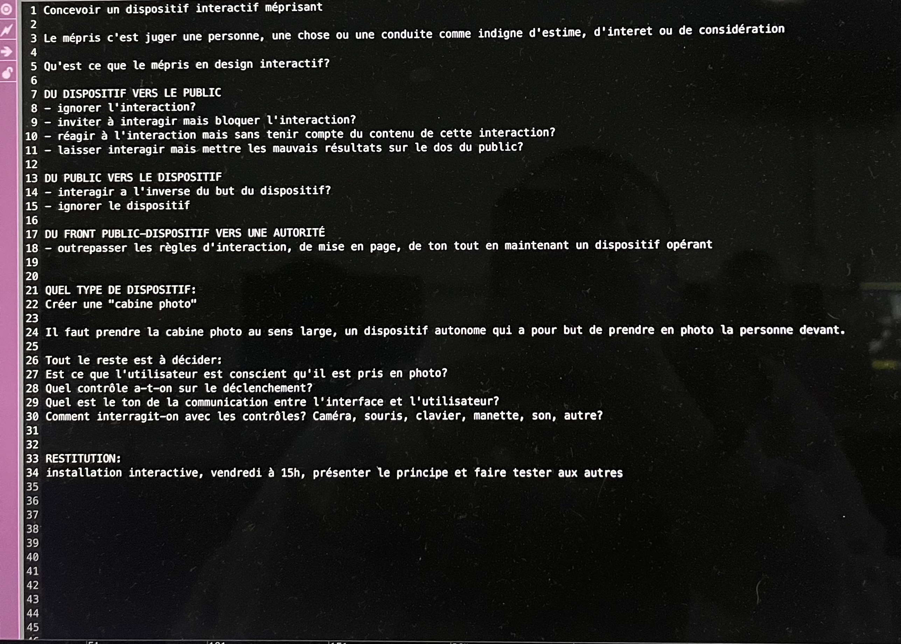
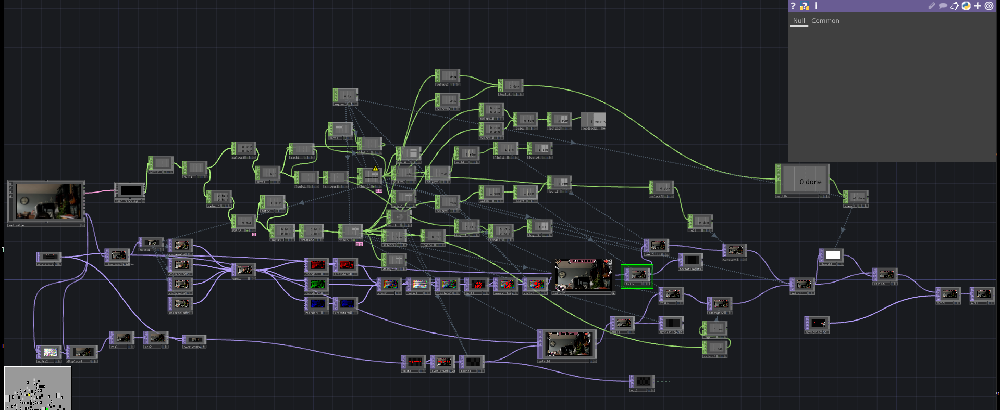

Projet interactif
Conçu à partir du brief initial, ce projet sur TouchDesigner réinterprète le concept du photobooth traditionnel en lui injectant une dimension condescendante. L’installation et l’expérience utilisateur ont été pensées pour que la machine rejette la responsabilité de ses propres bugs sur le public, générant en fin de session des rendus visuels volontairement méprisants.
Brief

